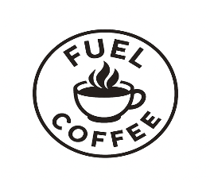

In this project, we analyzed data from a 2023 ATP Men's tour to determine an optimal tournament schedule for a tennis player based on rank, with the objective of maximizing total points at the end of the season. We used existing ATP rules regarding tournament participation to formulate constraints and utilized an ATP point distribution matrix from an official tennis source to help validate our optimized results.

In this project, we developed three unique visualizations, representing the relationships of global aid between donor and recipient countries. The first one highlights who donates to who, and how much, as well as who the biggest recipient is and the amount associated with it. The second one demonstrates the top purposes of donation, illustrating a breakdown of why the top donor and recipient countries established relationships. Finally, the third visualization observes the global aid interactions over time, filtering by decade to see which countries are the most active in giving or receiving.
In this project, we applied a logistic regression model to identify the biggest factors involved in the taste of chocolate. After conducting exploratory analysis and manipulatiing of the dataset, we created a binary "satisfactory" response variable. Using stepwise regression and AIC analysis, we found that cocoa percentage was the largest contributer to the overall taste of the chocolate.

For this presentation, our goal was to perform exploratory analysis on a dataset about a local coffee shop provided by our professor, and then create useful visualizations that help explain the staffing issues. Our team ended up examining the relationship between the number of walkouts per store and the average number of customers served per employee. We highlighted stores with high workloads and provided data-driven suggestions on what shifts to target that would help reduce the number of short-staffed shifts while increasing revenue.